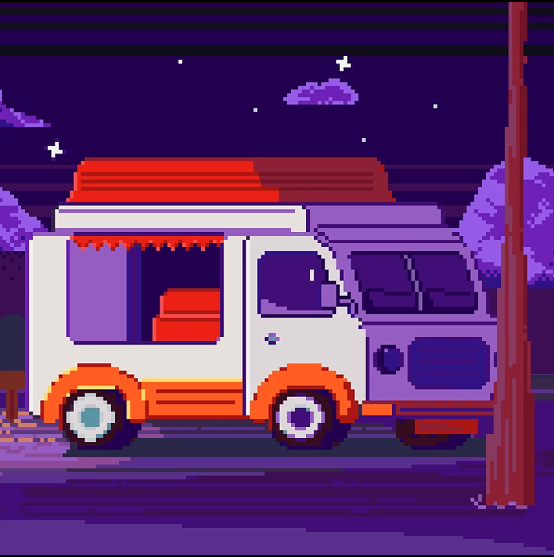

Фритрек и нулевой спринт: Подготовка к работе

</HTML>
Это было самое начало пути. На этом этапе важно было проникнуться основами и настроиться на учёбу. И, возможно, подумать, как новые знания могут повлиять на ваше будущее.
Всё началось с желания не просто понимать, как устроены IT-продукты, но и научиться создавать их самостоятельно. Опыт системного анализа уже дал мне хорошую базу, однако разработка открывает совершенно другую сторону привычных задач. Впереди много нового, и мне интересно пройти этот путь шаг за шагом.